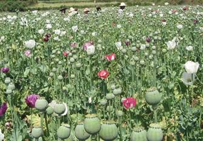
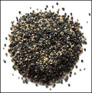
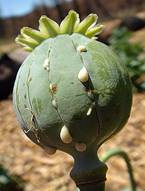
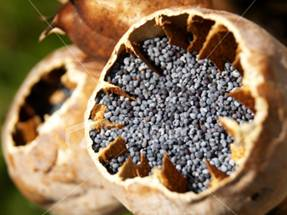

HORT 282 :: Lecture 23 :: SEED CERTIFICATION

OPIUM
(Papaver somniferum L., Papaveraceae)
The opium poppy Papaver somniferum is an outstanding medicinal plant, the products of which viz opium and codeine are important medicines used for their analgesic and hypnotic effects. A semi-synthetic derivative of this drug from morphine known as heroin has led to world-wide social problems. But attempts to find a synthetic drug which would replace morphine and codeine have not been fruitful so far. Its cultivation in India is confined to states of Madhya Pradesh, Rajasthan and Uttar Pradesh.
Papaver somniferum is an erect, rarely branched, glaucous annual, growing to a height of 60 to 120 cm. The leaves are ovate, oblong or linear oblong; flowers are large usually bluish with a purplish base or white, purple or variegated. It produces capsular type of fruits from which the latex known as opium is obtained on lancing. The fruits are about 2.5 cm in diameter, globose in shape. Seeds are reniform with white or black in colour. Though nearly all parts of the poppy plant contain a white milky latex, the unripe capsules contain large amount.

Climate and Soil
It is a crop of temperate climate but can be grown successfully during winter in sub-tropical regions. Cool climate favours higher yield, while higher day/night temperature generally affects the yield. Frosty or desiccating temperature, cloudy or rainy weather tends to reduce not only the quantity but also the quality of opium.
Opium poppy prefers a well drained, highly fertile light black or loam soil with an optimum pH around 7.0.
Varieties
The most popular varieties grown in the country remain in the field from 140 to 160 days. The following are some of the important varieties of which Talia, Ranghatak and Dhola Chota Gothia are popular varieties recommended for heavy black soils.
(i) Talia
It is sown early and it remains in the field for 140 days. Its flowers are pink and have large petals. The capsule is oblong, ovate, light-green and shiny (waxy).
(ii) Ranghatak
It is a medium-tall variety, maturing for lancing in 125-130 days after sowing. It bears white and light-pink flowers. It produces medium-sized capsules (7.6 cm x 5.0 cm), which are slightly flattened on the top. It yields opium of a comparatively thin consistency that change to a dark-brown colour on exposure.
(iii) Dhola Chota Gotia
It is a dwarf cultivar (85-90 em), bearing pure white flowers and light green capsules which are oblong-ovate in shape. It is ready for lancing after 105-115 days of sowing and matures for seed in 140 days.
(iv) MOP-3
This variety has been developed at the Jawaharlal Nehru Krishi Vishwa Vidyalaya, Mandsaur, recently. It bears pinkish-white flowers comprising of large non-serrated petals. Its capsules are ready for lancing 120 days after sowing and the variety is recommended where adequate irrigation facilities exist in the later part of the season.
(v) MOP-16
This is another promising selection made at the Jawaharalal Nehru Krishi Vishwa Vidyalay, Mandsaur. The plant bears white flowers with serrated petals and round, flat-topped capsules. This is comparatively drought tolerant and is ready for lancing 105-110 days after sowing. It is recommended where an early maturing crop is preferred.
(vi) Shama
This variety was released by the CIMAp, Lucknow during the year 1983. The main alkaloids like Morphine (14.51-16.75%), Codeine (2.05-3/24%), Thebaine (1.84-2.16%), Papaverine (0.82%) and Narcotine (5.89-6.32%) in this variety areJeDorted to be on higher side than the existing commercially cultivated variety. It yields 39.5 kg of latex and 8.8 kg/ha of seeds.
(vii) Shweta
This variety was also released by the CIMAp, Lucknow, along with Shama. However, it is reported to be superior to Shama in the content of the main alkaloids-morphine (15.75-22.38%), codeine (2.15-2.76%), thebaine (2.04-2.5%), papaverine (0.94-1.1%) and Narcotine (5.94-6.5%). It gives an average yield of 42.5 kg of latex and 7.8 kg/ha of seeds.
(viii) BROP 1 (Botanical Research Opium Poppy-l) (NBRI-3)
It is a synthetic variety developed at the National Botanical Research Institute, Lucknow, by crossing selections from Kali Dandi, Suyapankhi and Safaid Dandi. This variety is highly adaptable to varied agroc1imatic conditions and gives a higher yield than national checks. It is moderately resistant to diseases. It yields about 54 kg/ha of opium and 10-13 q/ha of seeds. The morphine content is 13% and above pose a problem, since they remain wet during the rains and are too difficult to cultivate in the dry period.
(ix) Kirtiman (NOP-4)
It was developed at the Narendra Dev University of Agriculture and Technology, Kumarganj, Faizabad, through selection from local races. The variety is moderately resistant to downy mildew. It yields 35-45 kg/ha of latex and 9-10 q/ha of seeds. The morphine content is up to 12%. .
(x) Chetak (U.O.285)
This variety was developed at the Rajasthan Agriculture University, Udaipur. It is moderately resistant to diseases. The opium yield is up to 54 kg/ha and the seed-yield is 10-12 q/ha and contains up to 12% morphine.
In general, the crop needs long cold season (20°C) with adequate sunshine in the early season for a healthy vegetative growth; heavy rains after sowing cause loss in seed germination. Warm, dry weather with a temperature of 30-35°C is required during the reproductive period. Cloudy weather, frost, hailstorms and high gusty winds, particularly during lancing, causes immense damage to the growing crop. Dry, warm weather conditions in February-March favour a good flow of latex and results in higher yields.
(xii) Jawahar Aphim 16 (JA-16)
It is a pureline selection of 10CaIIandraces developed at the Jawaharalal Nehru Krishi VlShwa Vidyalay College of Agriculture, Mandsaur (Madhya Pradesh). It is moderately resistant to downy mildew. It gives 45-54 kg/ha of latex, 8-10 q/ha of seeds and contains up to 12% morphine.
Recently, another three varieties:'NBRI-3' of opium, 'Sujatha' an opium-free poppy for the production of oil and seed and 'Shubhra' for high morphine and seed yield have been released from the NBRI, Lucknow, RRL, Jammu and ClMAP, Lucknow.
Preparation of land
The field should be ploughed 3 or 4 times to produce well pulverised soil. The field is then prepared into beds of convenient size.
Sowing
The seed is either sown broadcast or in lines. Before sowing, the seeds may be treated with fungicides like Dithane M.45 @ 4 g per Kg of seeds. Seed is usually mixed with fine sand before broadcasting to ensure uniform spread in the bed. Line sowing is preferred to broadcasting as the latter method has many drawbacks like higher seed rate, poor crop stand and difficulty in carrying out inter cultural operations. The best time for sowing is late October or early November. Seed rate is 7-8 Kg/ha for broadcast method and 4-5 Kg/ha for line sowing. A spacing of 30 cm between lines and 30 cm between plants is normally adopted.
After cultivation
Germination takes five to ten days depending upon the moisture content of the soil. Thinning is an important cultural practice to ensure uniform plant growth and better development. This is normally done When the plants are 5-6 cm high, having 3-4 leaves. Thinning is continued until the plants are about 14 to 15 cm height within a period of 3-4 weeks after sowing.
Manures and manuring
Opium poppy responds remarkably to the application of manures and fertilizers which increase both the yield and quality of opium.
Farm yard manure @ 20-30 t/ha is generally applied by broadcasting while the field is prepared for sowing. Besides, 60- 80 Kg of N and 40-50 Kg of P2O5 per hectare is recommended. No potash is applied. Half of N and entire P are applied at sowing time through placement and remaining· half bf N placed at rosette stage.
Irrigation
A careful irrigation management schedule is essential to get a good crop of poppy. A light irrigation is given immediately after sowing followed by another light irrigation after 7 days when the seeds start germinating. Three irrigations at an interval of 12-15 days are given till pre flowering stage and then irrigation frequency is reduced at 8-10 days during flowering and capsule formation stage. Normally, 12-15 irrigations are given during the entire crop period. Any moisture stress during the stage of fruiting and latex extracting may reduce the yield considerably.

Lancing and latex collection
Opium starts flowering in 95-115 days after sowing. The petals start shedding after 3-4 days of flowering. The capsules mature after 15-20 days of flowering. Lancing of the capsules exudes maximum latex at this stage. This stage can be visually judged by the compactness and a change in the colour from greenish to light green coloured ring in the capsule. The stage is called as industrial maturity.
Lancing may be done with a knife having three or four equispaced pointed ends which does not penetrate more than 1-2 mm in the capsule. Too deep or too shallow incision is not advisable. Lancing may be done early in the morning before 8.00 a.m. at two days interval in each capsule. The length of the incision should be 1/3 or less than the full length of capsule.

Harvesting and threshing
The crop is left for drying for about 20-25 days when the last lancing on the capsules stops exudation of latex. The capsules are then picked up and the plant is removed with sickles. Harvested capsules are dried in open yard and seeds are collected by beating with a wooden rod.
The yield of raw opium varies from 50 to 60 kg/ha.
***************
- Family of opium poppy is _______________
- Morphine is obtained from ____________
- Opium is extracted from which plant part __________
- Give two varieties of opium poppy
- Harvesting of opium poppy is called as _____________
| Download this lecture as PDF here |